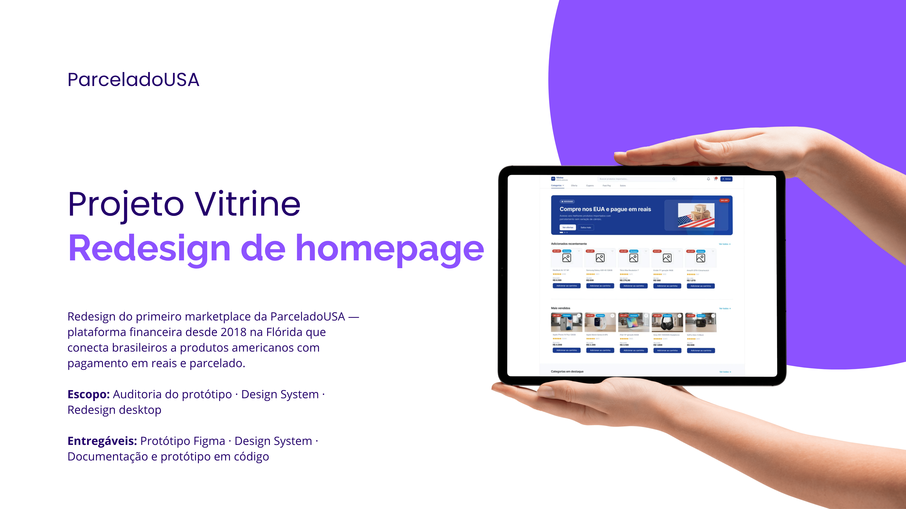

01 —
Projetos selecionados

UX/UI · E-commerce
Redesign Projeto Vitrine
Estudo de caso e redesign completo da vitrine de produtos e-commerce

UX/UI · Marketplace
Chãozão
Marketplace rural — auditoria e redesign de onboarding

UI Design · POS
Point Sell
Sistema de ponto de venda com foco em usabilidade

UI Design · E-commerce
Projeto Vitrine
Interface de vitrine de produtos para varejo

Mobile · UX/UI
App de Clima
Aplicativo mobile de previsão do tempo

Product Design · B2B
CRM Connect
Plataforma de gestão de relacionamento com clientes

UX Design · Formulário
Observatório
Fluxo de cadastro para agendamento de observação